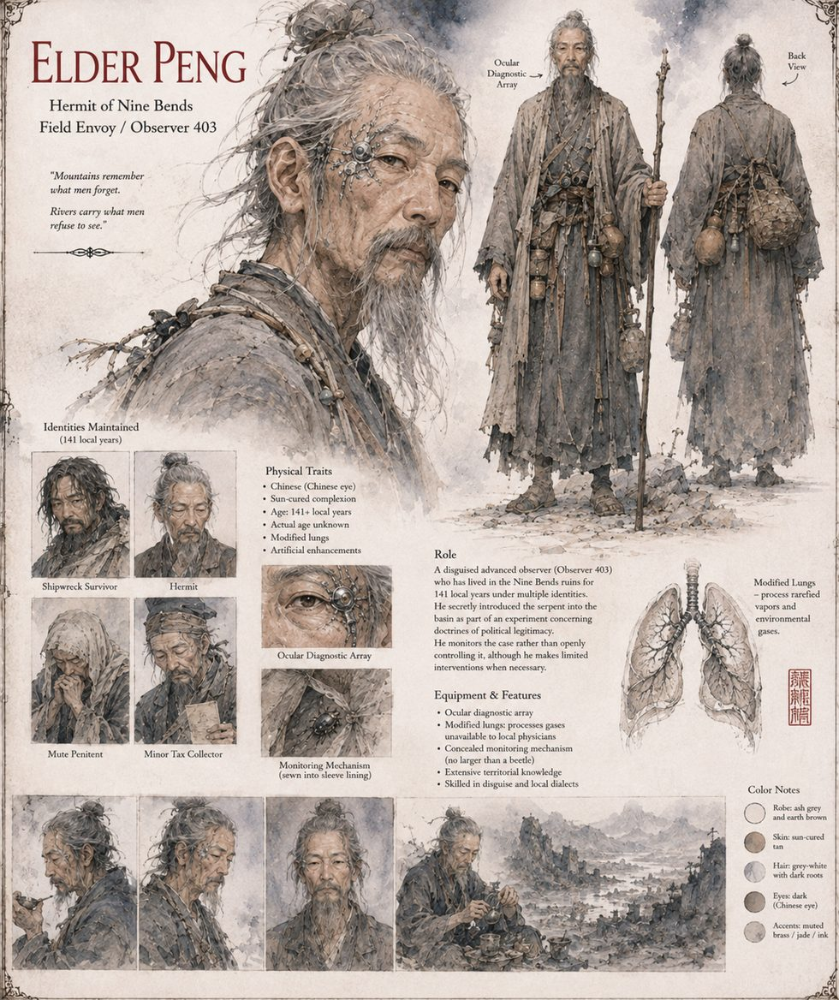

Elder Peng
Observer 403 · Hermit of Nine Bends · 141 local years in the ruins
The Cultivators' Envoy at Nine Bends, and the only person in the story who knows what the fish is. He has occupied the flooded ruin for one hundred and forty-one local years under a rotation of identities — shipwreck survivor, hermit, mute penitent, and once, unhappily, a minor tax collector — and the district credits his sun-cured silence to a miracle of the sea-cave that let him survive a wreck. In truth his lungs draw on gases no local physician has a name for, an ocular array reads every pulse within sight, and a monitoring mechanism no larger than a beetle, sewn into the lining of his sleeve, records the water's conductivity and the serpent's discharge.
The Prime Directive lets him intervene at several points, and he takes almost none of them. He lets Ren Duo knock on a magistrate's door when a single sentence would have stopped him, and lets him leave the ruin with his rope and his half-formed plan when the protocol permits a less generous accounting. Instead he writes a single non-standard phrase into his log — “rounding error” — on eleven separate occasions, each time about someone outside his mandate. The Custodian's analyst notes it corresponds to no authorized metric, and that his cover identity remains unretired. Recommends no action. Recommends, in fact, nothing.
“Mountains remember what men forget. Rivers carry what men refuse to see.”
Appears in The Heavenly Thunder-Serpent